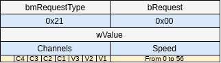

El proceso de captura de datos, es realizado por un microcontrolador STM32, que lee los canales ADC de tension y corriente, almacena estos valores en un buffer y realiza el envio, a traves del puerto USB al controlador que procesara estos valores (NanoPi Neo Air). Adicionalmente el firmware realiza otras funciones auxiliares:
El acceso al STM32 se realiza a través del puerto USB, no se implementa ninguna clase predefinida en el standar, o lo que es lo mismo bDeviceClass es VENDOR_DEFINED. El hardware de captura no necesita instalar driver, ya que la comunicacion se realiza directamente enviando datos al endpoint 0 (CONTROL) y recibiendo datos a traves del endpoint 1 (BUCK) del dispositivo USB con la libreria libusb.
La identificación del dispositivo, útil en caso de haber varios en el mismo sistema, se realiza por medio del numero de serie, accesible en el descriptor del USB. También es accesible la versión del firmware que esta en ejecución, y que determina el formato de los datos intercambiados.
A traves de este endpoint se controla y se consulta al STM32. Los metodos disponibles son:

Inicia la captura de datos en el ADC y su envio al controlador. Si la captura ya estaba activa, se reinicia usando los nuevos parametros:(1 Byte): Determina en que canales se realizara la captura. En realidad la captura se realiza en todos los canales disponibles, pero solo los seleccionados se transferiran al controlador para optimizar el ancho de banda disponible:
Bit 0: Canal de tension A activoBit 1: Canal de tension B activoBit 2: Canal de tension C activoBit 3: Canal de corriente A activoBit 4: Canal de corriente B activoBit 5: Canal de corriente C activoBit 6: Canal de corriente D activoBit 7: No usado
(1 byte): Determina la velocidad de muestreo y oversampling. Todos las velocidades de captura son multiplos de 50 y 60Hz. Los valores admitidos son:0x00 - Freq. muestreo 24kHz - Freq. Envio 6kHz
Una vez enviado este comando, el endpoint 1 se activara si no lo estaba, y comenzara a enviar los valores leidos del ADC. El numero de sequencia se reiniciara a 0 y las muestras anteriores, en caso de haber, seran eliminadas.
Transacciones IN (Dispositivo a host) Data transfer Solo existe un tipo de transaccion IN, destinada a la lectura de datos por parte del host. Esta transaccion, de 64 bytes de longitud contiene los campos: Seq : Numero de sequencia del bloque, aumenta con cada nuevo bloque enviado. Al contener cada bloque partes incompletas de una muestra, este numero de secuencia es imprescindible para reconstruir las muestras de manera correcta. Info : Este campo ofrece una doble función: Bit 7; Estado del boton Fn1. Bit 6: Estado del boton Fn2. Bit 5: Alimentacion activa. (Aunque oZm este conectado y reciba tensión de linea, esta puede ser baja o demasiado alta para el correcto funcionamiento, en estos casos la fuente de entrada se desconecta para evitar daños). Bits 4..0: Corresponden al nivel de bateria. 0000 corresponden a 3v de tension. 1111 corresponden a 4.3v de tension. Samples: Las muestras se envian de manera secuencial, incluyendo solo los canales activados. En la imagen se muestra un ejemplo de la trama en 3 phase + neutro y en monofasica, pero seria posible cualquier combinacion de canales, como por ejemplo una tension y cuatro medidas de corriente. El orden de envió es el mismo que se indica en Mode (del bit menos significativo al mas significativo. Transacciones OUT (Host a dispositivo) OUT Solo existe un tipo de transacción OUT, con la función de iniciar la captura, fijando el modo y velocidad de adquisición, se usa esta misma transacción para informar al hardware del estado de la red y reiniciar el watchdog que controla la alimentación del host. Mode: Configura los canales de captura utilizados. Bit 7: Activa/Detiene la captura. Bit 6: Activa el canal de corriente 4. Bit 5: Activa el canal de corriente 3. Bit 4: Activa el canal de corriente 2. Bit 3: Activa el canal de corriente 1. Bit 2: Activa el canal de tensión 3. Bit 1: Activa el canal de tensión 2. Bit 0: Activa el canal de tensión 1. Speed: Determina la velocidad de captura. Esta viene determinada por Stat1: Informa de estado de CPU y RAM. Bits [7..4]: Nivel de uso de CPU (entre 0 y 15). Bits [ 3..0]: Nivel de uso de RAM (entre 0 y 15). Stat2: Informa del estado del almacenamiento y la red. Bits[7..4]: Nivel de uso del almacenamiento (Entre 0 y 15). Bits[3..0]: Estado de la red, donde: 0000 indica que se esta en modo AP (sin configurar). 0001 indica que se esta en modo STA pero sin conexion. 0010 a 1111 indica que se esta conectado, y el nivel de señal de la red. Timestamp: Fecha del sistema.